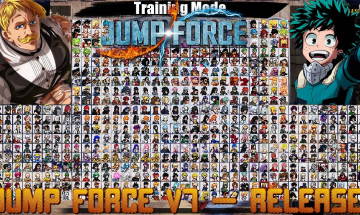

Jump Force Mugen e Um jogo de Luta 2d de Pixel Estilo os Games dqa decada de 90, esse jogo contem centenas de personagens de anime, os mais recendes como Kimetsuu no Yaiba quanto os mais Antigos como Dragon Ball, caso goste de um personagem especifico que nao esta na lista da para baixar um "Char" na internet que seria Um personagem do Jogo, Baixando ele e mexendo em algumas configurações da pasta da para coloca-lo no jogo, Tem varios modo de jogo, Cooperativo, Survival, Treino, Arcade E Assistir Maquina VS Maquina, Caso tenha dois personagens fortes mas nao sabe qual e o melhor, Maquina VS Maquina Serve para isso, Aproveite Jump Forces Mugen.
